Portfolio / sélection
Mes projets
Procedural Fish Animation
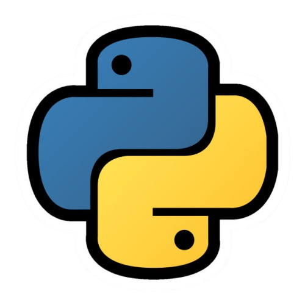
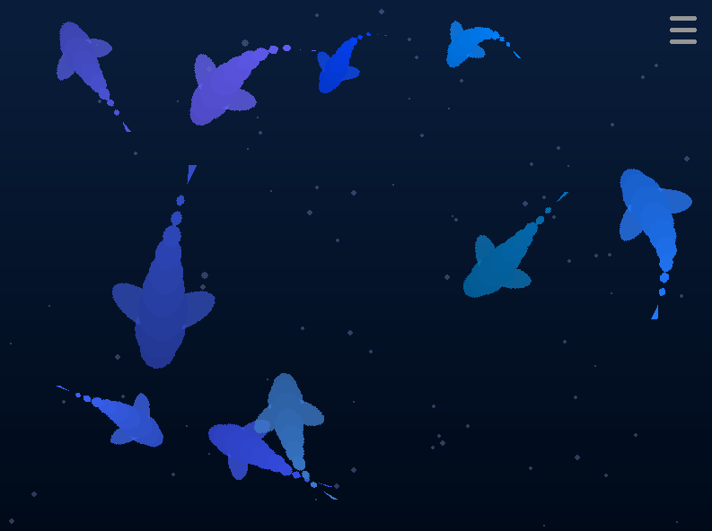
Voici un aperçu de mon projet de simulation de poissons procéduraux, un projet passionnant qui vise à explorer le principe de Body Shape Based Animation.
Voir plusMinecraft Game Engine
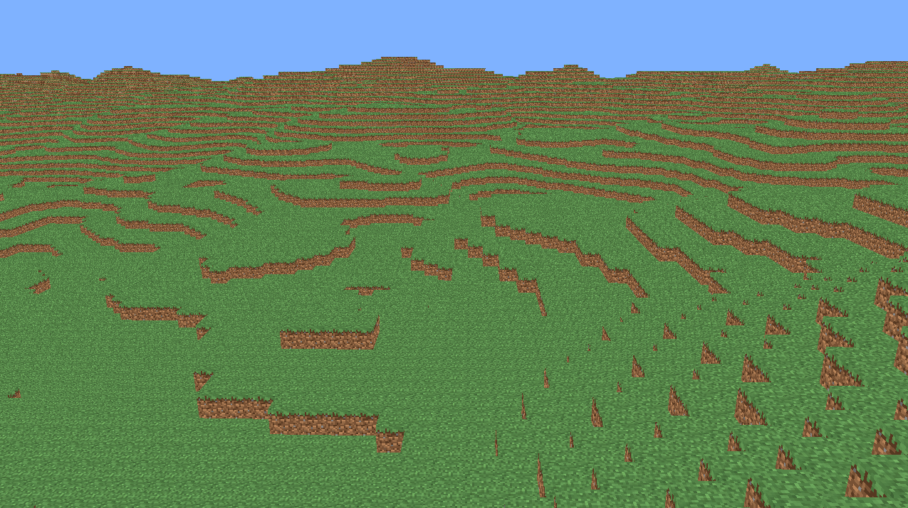
Voici un aperçu de mon moteur de jeu Minecraft, un projet passionnant qui vise à créer mon propre moteur de jeu voxel basé sur le jeu Minecraft.
Voir plusMetro Fix Up
Metro Fix Up est un jeu commandé par la RATP pour initier les jeunes aux métiers "cachés" de la maintenance des stations de métro.
Voir plusPortal Dash
Portal Dash est un endless runner 2.5D innovant où chaque portail transforme complètement l’univers et le gameplay. Les joueurs enchaînent des expériences variées : surfer sur des pentes enneigées façon Alto, piloter un vaisseau futuriste type Geometry Dash, ou courir sur des voies ferrées dans une mine façon Little Big Planet. Chaque transition surprend et relance le défi, créant une expérience dynamique et rythmée.
Voir plusMidnight Marathon !
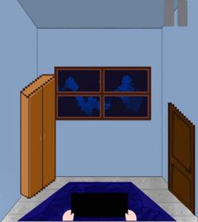
Ce jeu mobile a été réalisé en 40 heures lors d'une game jam. Le principe du jeu est que de nombreux mini-jeux apparaissent en bas de l'écran, et en plus, vous devez surveiller le haut de l'écran car de temps en temps, la mère de notre personnage entrera dans la chambre pour vérifier si nous dormons. Si elle nous attrape, nous perdons.
Voir plusAstroShift
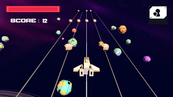
Astro Shift Unity est un jeu où vous contrôlez un vaisseau spatial qui peut se déplacer latéralement sur différentes lignes pour éviter les météores entrants.
Voir plusIdle Ages
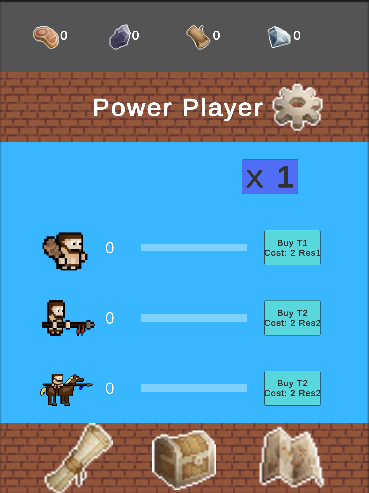
Le joueur sera le dirigeant d'un territoire à travers différentes époques, de la préhistoire à l'ère futuriste. Il devra commander ses troupes avec le meilleur équipement et améliorer plusieurs aspects pour gagner en puissance. Le joueur doit gérer un arbre de recherche qui débloque diverses technologies, telles que militaires, stratégiques ou économiques. De plus, le joueur doit équiper ses troupes de manière optimale avec le meilleur équipement pour remporter les batailles plus facilement. Enfin, le joueur devra augmenter le nombre de troupes pour diversifier ses stratégies d'attaque et avoir une armée plus grande et plus puissante.
Voir plusKitchen Project
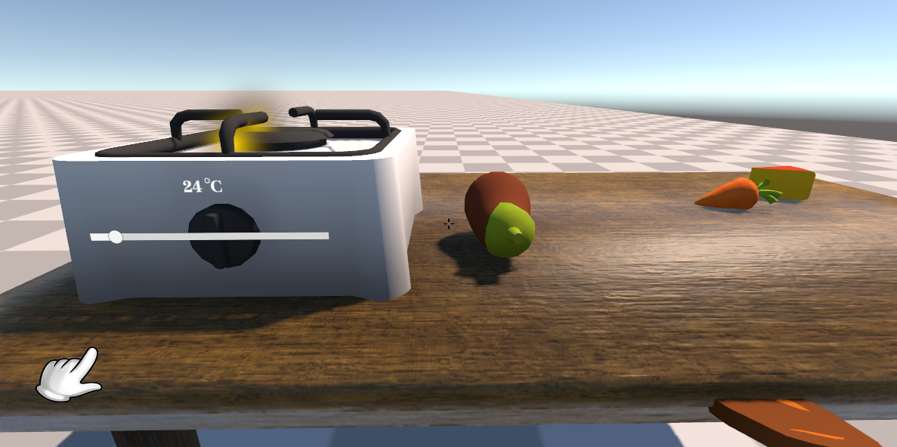
"Kitchen-Project" est un prototype de jeu de cuisine en 3D développé en vue à la première personne (FPS) en utilisant Unity et C#. Le projet présente diverses fonctionnalités développées pour le jeu, y compris ramasser et poser des objets dans des conteneurs ou directement là où le joueur regarde, un système de stockage d'ingrédients, un système de sauvegarde et de création de recettes, et les déplacements de base du joueur.
Voir plusPodRacer
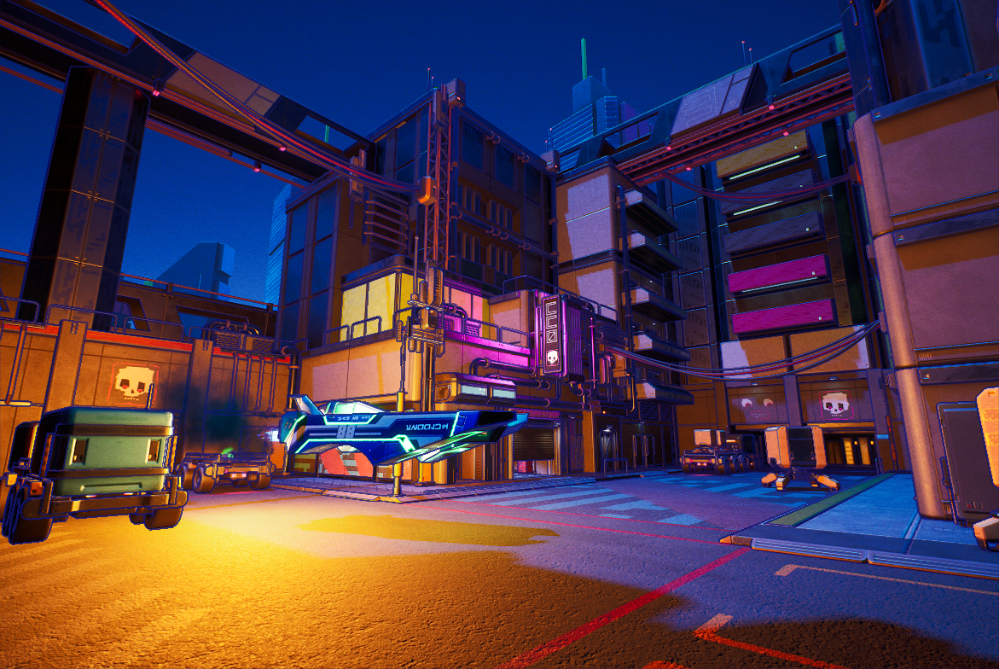
PodRacer est un jeu de course et de parcours nerveux dans la veine de Trackmania, où le joueur prend les commandes d’un vaisseau anti-gravité flottant au-dessus du sol. Ici, pas de simples virages ou lignes droites : les circuits sont des défis acrobatiques où précision, vitesse et créativité sont les clés de la victoire.
Voir plusAngry Bird
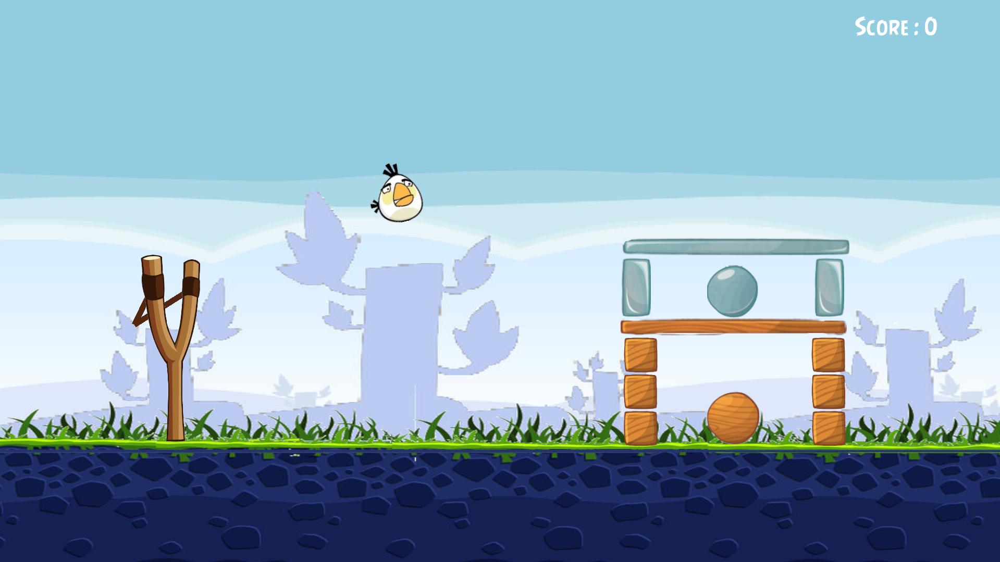
Angry Bird est un jeu éducatif inspiré du célèbre jeu de catapulte, conçu pour étudier les trajectoires en physique et mathématiques à travers une expérience ludique et interactive.
Voir plusChess Game
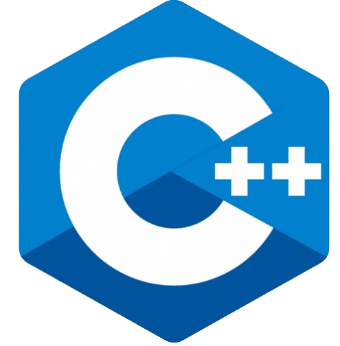
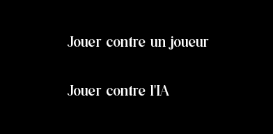
Chess Game est un jeu d’échecs classique développé en C++ avec la bibliothèque SFML, proposant deux modes de jeu : Joueur contre Joueur, et Joueur contre IA utilisant l’algorithme MinMax.
Voir plusZorya Sister
Zorya Sisters est un platformer/puzzle 2D développé avec SFML. Incarnez les soeurs Zorya, des poupées russes souhaitant quitter la maison de leur propriétaire à tout prix. En utilisant leurs différents pouvoirs; surmontez les obstacles et les énigmes qui se dressent devant vous ! Ce jeu est un de nos projet d'études, nous l'avons développé en trois semaines. Si nous avions prévu de le sortir sur Steam ou Itch.io, le plan aurait été de créer plusieurs mondes à la manière des jeux Mario : chaque pièce de la maison aurait représenté un monde contenant plusieurs niveaux à l'intérieur. Mais dû à un manque de temps, nous avons décidé de créé un seul niveau permettant d'introduire les différentes mécaniques.
Voir plusShoot.io
Bienvenue dans notre jeu captivant de survie en 2D, où vous incarnez un courageux humain devant affronter des hordes de monstres déterminés à vous éliminer pour leur propre survie. Le jeu offre une perspective de haut en bas, plongeant les joueurs dans un monde immersive rempli de défis et d'excitation.
Voir plusTower Defense
Bienvenue dans notre projet de jeu passionnant, une base de Tower Defense offrant une expérience immersive et stratégique. Actuellement, le jeu permet aux joueurs de placer des tours sur le terrain, tandis que ces tours tirent des projectiles sur les ennemis qui tentent de traverser le chemin prédéfini. Le jeu est conçu pour évoluer avec des fonctionnalités supplémentaires à ajouter, offrant ainsi une expérience de Tower Defense personnalisable et améliorable.
Voir plus